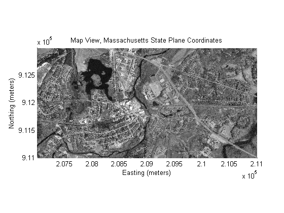
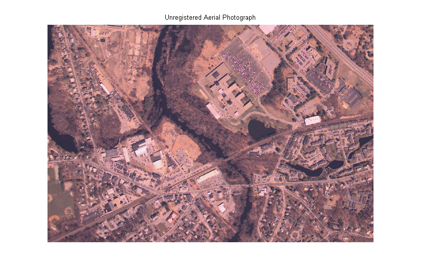
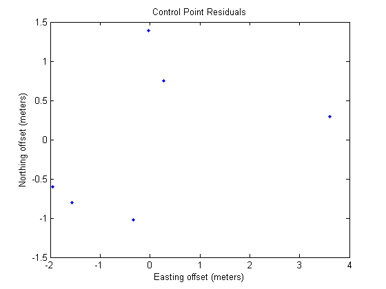
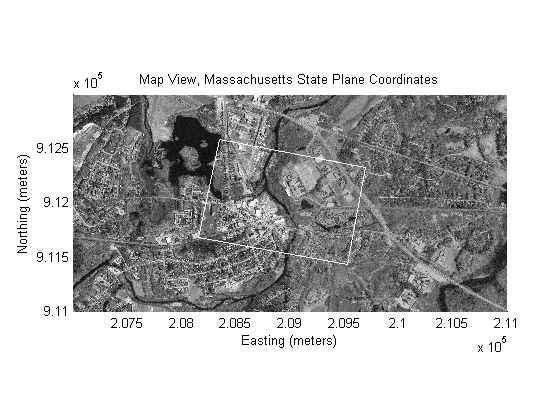
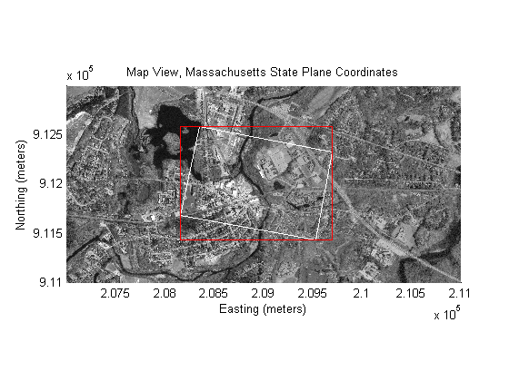
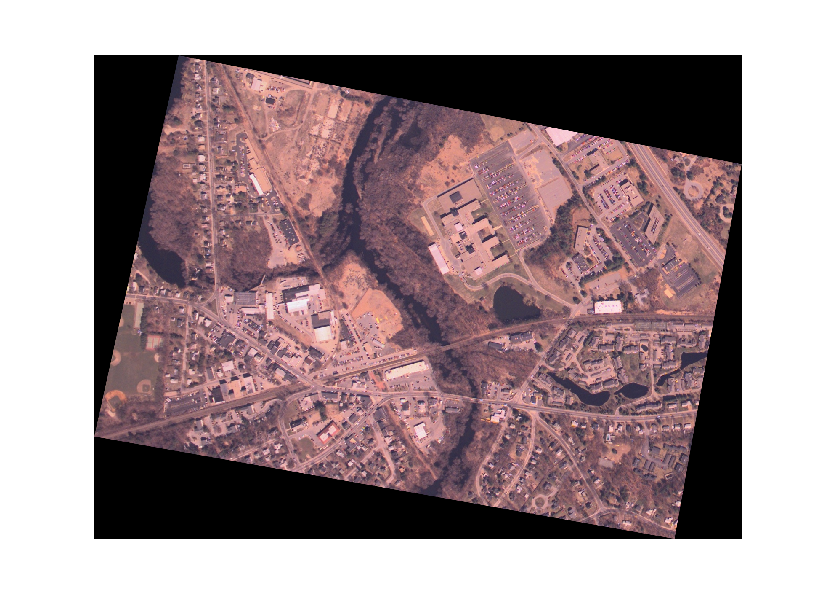
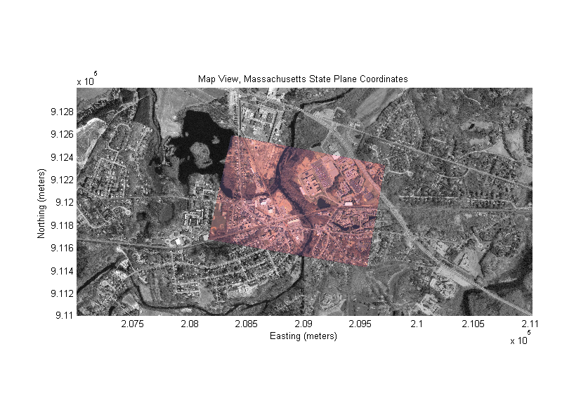
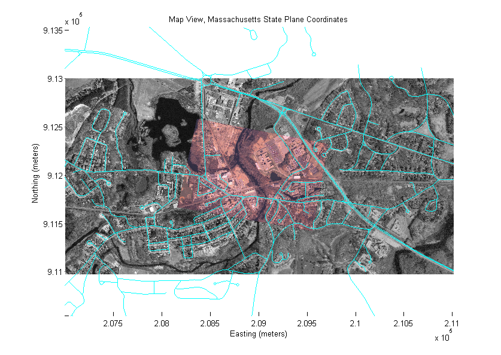

This demo illustrates one way to georegister an image by registering the image to an earth coordinate system and creating a new "georeferenced" image. This demo requires the Image Processing Toolbox.
In this demo, all georeferenced data are in the same earth coordinate system, the Massachusetts State Plane system (using the North American Datum of 1983 in units of meters). This defines our "map coordinates." The georeferenced data include an orthoimage base layer and a vector road layer.
The data set to be georeferenced is a digital aerial photograph covering parts of the village of West Concord, Massachusetts, collected in early spring, 1997.
The orthoimage base layer is structured into 4000-by-4000 pixel tiles, with each pixel covering exactly one square meter in map coordinates. Each tile is stored as a TIFF image with a world file. The aerial photograph of West Concord overlaps two tiles in the orthoimage base layer. (For convenience, this demo actually works with two 2000-by-2000 sub-tiles extracted from the larger 4000-by-4000 originals. They have the same pixel size, but cover only the area of interest.)
Read the worldfiles for the two tiles
currentFormat = get(0,'format'); format bank R1 = worldfileread('concord_ortho_w.tfw') R2 = worldfileread('concord_ortho_e.tfw') format(currentFormat)
R1 =
0 -1.00
1.00 0
206999.50 913000.50
R2 =
0 -1.00
1.00 0
208999.50 913000.50
Read the two orthophoto base tiles required to cover the extent of the aerial image.
[baseImage1,cmap1] = imread('concord_ortho_w.tif'); [baseImage2,cmap2] = imread('concord_ortho_e.tif');
Display the images in their correct spatial positions.
mapshow(baseImage1,cmap1,R1) ax1 = gca; mapshow(ax1,baseImage2,cmap2,R2) title('Map View, Massachusetts State Plane Coordinates'); xlabel('Easting (meters)'); ylabel('Northing (meters)');
This step uses functions cpselect, cpstruct2pairs, cp2tform, tformfwd, and imtransform from the Image Processing Toolbox, in combination with pix2map. Together, they enable georegistration based on control point pairs that relate the aerial photograph to the orthoimage base layer.
Read the aerial photo
inputImage = imread('concord_aerial_sw.jpg'); figure, imshow(inputImage) title('Unregistered Aerial Photograph')
Both orthophoto images are indexed images but cpselect only takes grayscale images, so convert them to grayscale.
baseGray1 = im2uint8(ind2gray(baseImage1,cmap1)); baseGray2 = im2uint8(ind2gray(baseImage2,cmap2));
Downsample the images by a factor of 2, then pick two separate sets of control point pairs: one for points in the aerial image that appear in the first tile, and another for points that appear in the second tile. Save the control point pairs to the base workspace as control point structures named cpstruct1 and cpstruct2.
n = 2; % downsample by a factor n load mapexreg.mat % load some points that were already picked cpselect(inputImage(1:n:end,1:n:end,1),... baseGray1(1:n:end,1:n:end),cpstruct1); cpselect(inputImage(1:n:end,1:n:end,1),... baseGray2(1:n:end,1:n:end),cpstruct2);
This tool helps you pick pairs of corresponding control points. Control points are landmarks that you can find in both images, like a road intersection, or a natural feature. Three pairs of control points have already been picked for each orthophoto tile. If you want to proceed with these points, go to Step 3: Infer and apply geometric transformation. If you want to add some additional pairs of points, do so by identifying landmarks and clicking on the images. Save control points by choosing the File menu, then the Save Points to Workspace option. Save the points, overwriting variables cpstruct1 and cpstruct2.
Extract control point pairs from the control point structures.
[input1,base1] = cpstruct2pairs(cpstruct1); [input2,base2] = cpstruct2pairs(cpstruct2);
Account for downsampling by factor n.
input1 = n*input1 - 1; base1 = n*base1 - 1; input2 = n*input2 - 1; base2 = n*base2 - 1;
Transform base image coordinates into map (State Plane) coordinates.
spatial1 = pix2map(R1,fliplr(base1)); spatial2 = pix2map(R2,fliplr(base2));
Combine the two sets of control points and infer a projective transformation. (The projective transformation should be a reasonable choice, since the aerial image is from a frame camera and the terrain in this area is fairly gentle.)
input = [input1; input2];
spatial = [spatial1; spatial2];
tform = cp2tform(input,spatial,'projective');
Compute and plot (2D) residuals.
residuals = tformfwd(input,tform) - spatial; figure plot(residuals(:,1),residuals(:,2),'.') title('Control Point Residuals'); xlabel('Easting offset (meters)'); ylabel('Northing offset (meters)');
Predict corner locations for the registered image, in map coordinates, and connect them to show the image outline.
w = size(inputImage,2);
h = size(inputImage,1);
inputCorners = [0 0;
w 0;
w h;
0 h;
0 0] + .5;
outputCornersSpatial = tformfwd(inputCorners,tform);
figure(get(ax1,'Parent'))
line(outputCornersSpatial(:,1),outputCornersSpatial(:,2),'Color','w')
 Calculate the average pixel size of the input image (in map units).
d = [outputCornersSpatial(2,:) - outputCornersSpatial(1,:);...
outputCornersSpatial(5,:) - outputCornersSpatial(4,:)];
[theta,lengths] = cart2pol(d(:,1),d(:,2));
pixelSize = lengths./[w; h]
pixelSize =
0.8906
0.9096
Variable pixelSize gives a starting point from which to select a width and height for the pixels in our georegistered output image. In principle we could select any size at all for our output pixels. However, if we make them too small we waste memory and computation time, ending up with a big (many rows and columns) blurry image. If we make them too big, we risk aliasing the image as well as needlessly discarding information in the original image. In general we also want our pixels to be square. A reasonable heuristic is to select a pixel size that is slightly larger than max(pixelSize) and is a "reasonable" number (i.e., 0.95 or 1.0 rather than 0.9096). Here we chose 1, which means that each pixel in our georegistered image will cover one square meter on the ground. It's "nice" to have georegistered images that align along integer map coordinates for display and analysis.
outputPixelSize = 1;
Choose the output bounding box to align to a 1 meter grid.
outputBoundingBox = [floor(min(outputCornersSpatial)); ...
ceil(max(outputCornersSpatial))];
left = outputBoundingBox(1);
right = outputBoundingBox(2);
bottom = outputBoundingBox(3);
top = outputBoundingBox(4);
outputBoundingBoxClose = [left top;
left bottom;
right bottom;
right top;
left top];
Display a bounding box for the registered image.
line(outputBoundingBoxClose(:,1),outputBoundingBoxClose(:,2),'Color','r')
Find the centers of the upper left and lower right corner pixels.
outputCornerCenters = ... [left top; right bottom]... + [0.5 -0.5; -0.5 0.5] * outputPixelSize
outputCornerCenters =
1.0e+05 *
2.0815 9.1258
2.0969 9.1144
Transform the aerial image to an image that should fit just right within the "outputBoundingBox."
registered = imtransform(inputImage,tform,... 'XData',outputCornerCenters(:,1)',... 'Ydata',outputCornerCenters(:,2)',... 'XYScale',outputPixelSize); figure, imshow(registered)
The registered image does not completely fill its bounding box, so it includes null-filled triangles. Create an alpha data mask to make these fill areas render as transparent.
alphaData = registered(:,:,1); alphaData(alphaData~=0) = 255;
Create a reference matrix for the registered image.
Rregistered = makerefmat(outputCornerCenters(1,1),... outputCornerCenters(1,2),... outputPixelSize,... -outputPixelSize);
Verify the new spatial structure by checking its bounding box.
sizeRegistered = size(registered); boundingBoxCheck = mapbbox(Rregistered,sizeRegistered(1:2)); isequal(boundingBoxCheck,outputBoundingBox)
ans =
1
Write the registered image as a TIFF with a world file, thereby georeferencing it to our map coordinates.
imwrite(registered,'concord_aerial_sw_reg.tif'); worldfilewrite(Rregistered,getworldfilename('concord_aerial_sw_reg.tif'));
Display the registered image on the same (map coordinate) axes as the orthoimage base tiles.
mapshow(baseImage1,cmap1,R1) ax2 = gca; mapshow(ax2,baseImage2,cmap2,R2) title('Map View, Massachusetts State Plane Coordinates'); xlabel('Easting (meters)'); ylabel('Northing (meters)'); h = mapshow(ax2,registered,Rregistered); set(h,'AlphaData',alphaData)
You can assess the registration by looking at features that span both the registered image and the orthophoto images.
Use shapeinfo and shaperead to learn about the attributes of the vector road layer. Render the roads on the same axes and the base tiles and registerd image.
roadsfile = 'concord_roads.shp';
roadinfo = shapeinfo(roadsfile);
roads = shaperead(roadsfile);
Create symbolization based on the CLASS attribute (the type of road). Note that very minor roads have CLASS values equal to 6, so don't display them.
roadspec = makesymbolspec('Line',... {'CLASS',6,'Visible','off'}); mapshow(ax2,roads,'SymbolSpec',roadspec,'Color','cyan')
Observe that the roads line up quite well with the roads in the images. Two obvious linear features in the images are not roads but railroads. The linear feature that trends roughly east-west and crosses both base tiles is the Fitchburg Commuter Rail Line of the Massachusetts Bay Transportation Agency. The linear feature that trends roughly northwest-southeast is an abandoned railroad line.
concord_orthow_w.tif, concord_ortho_e.tif, concord_roads.shp:
Office of Geographic and Environmental Information (MassGIS), Commonwealth of Massachusetts Executive Office of Environmental Affairs http://www.state.ma.us/mgis
For more information, run:
>> type concord_ortho.txt >> type concord_roads.txt
concord_aerial_sw.jpg
Visible color aerial photograph courtesy of mPower3/Emerge.
For more information, run:
>> type concord_aerial_sw.txt